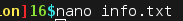
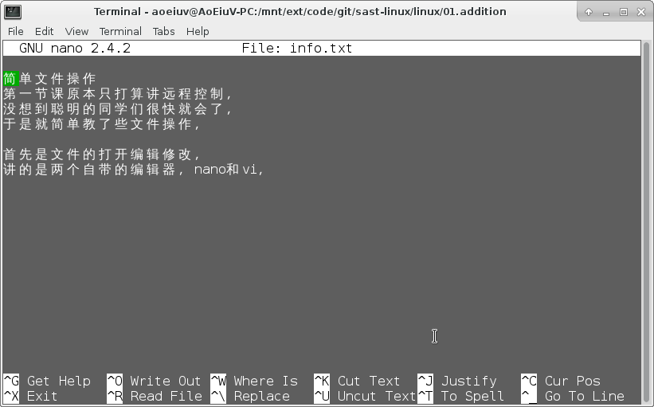
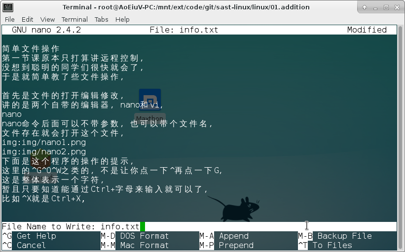
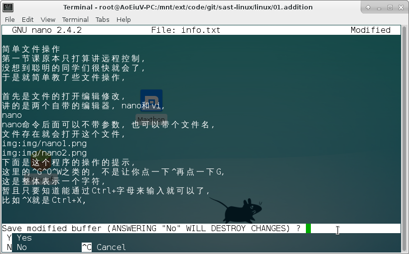
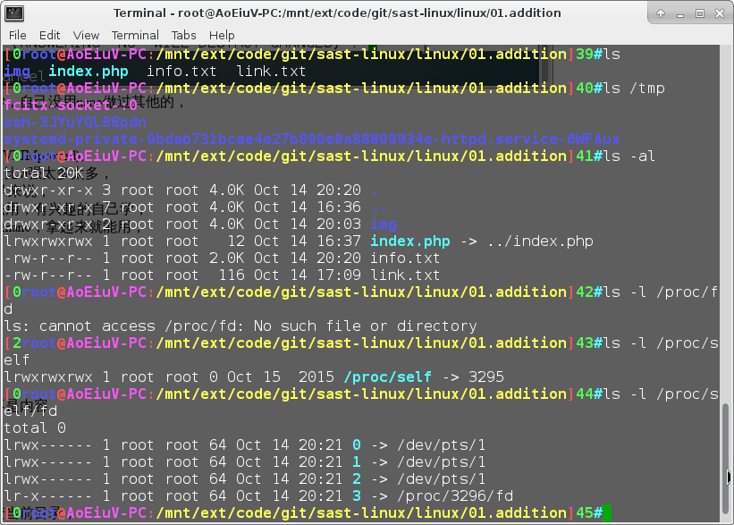
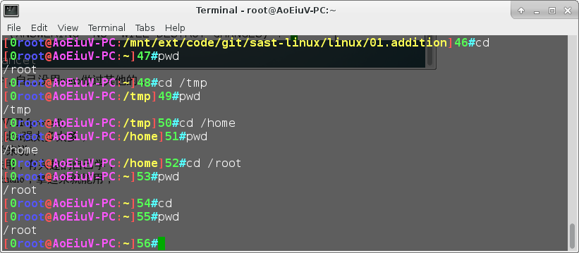
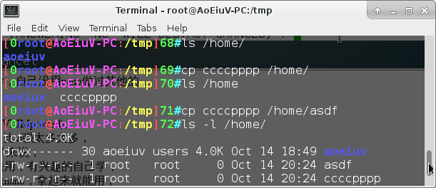
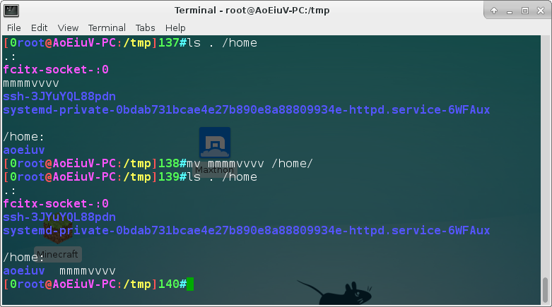
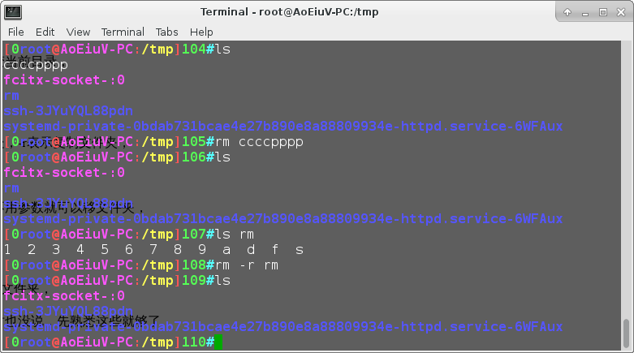
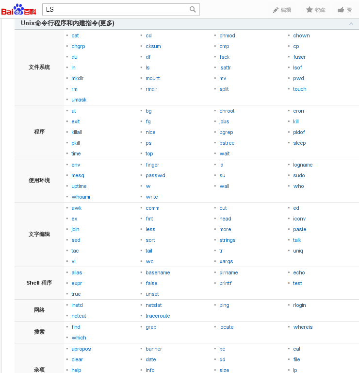

简单文件操作，第一节课原本只打算讲远程控制，没想到聪明的同学们很快就会了，于是就简单教了些文件操作。
首先是文件的打开编辑修改，讲的是两个自带的编辑器，nano和vi。
nano，nano命令后面可以不带参数，也可以带个文件名，文件存在就会打开这个文件。


图中下面是这个程序的操作的提示，这里的^G^O^W之类的，不是让你点一下^再点一下G，这是整体表示一个字符，暂且只要知道能通过Ctrl+字母来输入就可以了，比如^X就是Ctrl+X,具体的命令，这里只讲基本的保存和退出，^O 保存文件，会出现填文件名的。

^X 退出，如果没保存会问是否保存。

至于其他的，想知道的自己学，自己没用nano做过其他的。
vi，我一直是用vim，vim是vi增强版(VI IMproved)，vim和操作方式是基于vi，但是比vi强太多太多，但是对于没接触过vi/vim的同学来说，这两者都很反人类，简直没法用，有兴趣的自己学，这是需要学习的编辑器，不像nano，拿起来就能用。
然后是文件操作的命令
ls(list)
ls
ls /tmp
ls -l /proc/self
看目录或文件的相关信息，不是内容。

cd(change directory)
cd
cd /tmp
cd /home
改变工作目录，其实就是改变当前目录。

cp(copy)
cp /tmp/B15 /home/student/name/
cp -r /home/student/name /tmp
复制一个文件或文件夹到别处，-r表示复制文件夹。

mv(move)
mv /tmp/B15 /home/student/name
移动文件或文件夹到别处，不用参数就可以移文件夹。

rm(remove)
rm /tmp/B15
rm -r /tmp
移除一个文件或文件夹，-r是文件夹。

就这些了，具体更多用法暂时也没说，先熟悉这些就够了，man ls，用man可以看大多命令的手册，可以自己看，基本命令多的是，有兴趣&&有空的话可以一个一个随便看看。
